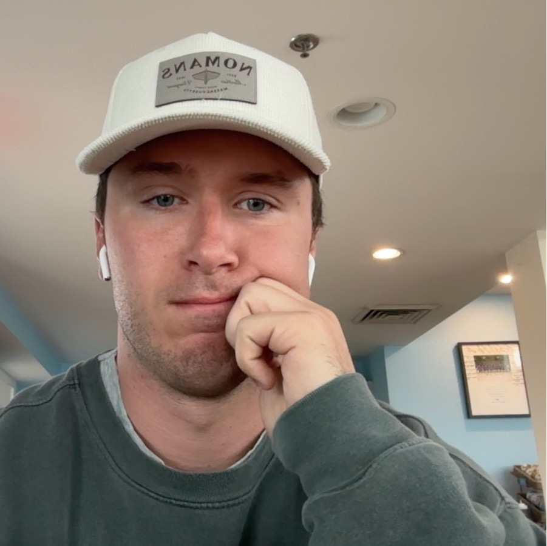

Jack (not book)

book (not Jack)
Hello, internet stranger. If you found your way here, I assume you're at least somewhat tangentially interested in me, what I've written, or what I think. So I'll tell you a bit about all of the above. But before you go any further, I recommend you check out my book, Young Money.

Jack (not book)
book (not Jack)
I would loosely describe it as "life advice for 20-somethings who still want to live a little while they're young," or "a more fun Defining Decade." Your 20s are this weird, stressful, seemingly-always-high-stakes period of life. They're also incredibly fun. So I wrote a book on how to make the most of that weird, stressful, fun period. If you, like me, subjected yourself to occasional (or frequent) bouts of stress and overthinking about making the most of "the current moment," you'll probably like this book.
I'm an investor, writer, author, occasional Linkedin shitposter, former vagabond traveler, occasional markets speculator, Twitter addict, mediocre Spanish speaker, Citibike connoisseur, New York City fanatic, business school apologist, and proud personality hire in most aspects of life.
Check my about page.
I've been writing a Substack called Young Money since 2021. It was, initially, a finance blog, and then it was a finance blog + travel blog, and now it's the home of all of my long-form writing, from financial market musings to adventures in Tromsø and Tel Aviv to my more philosophical thoughts on life.
Some favorites: